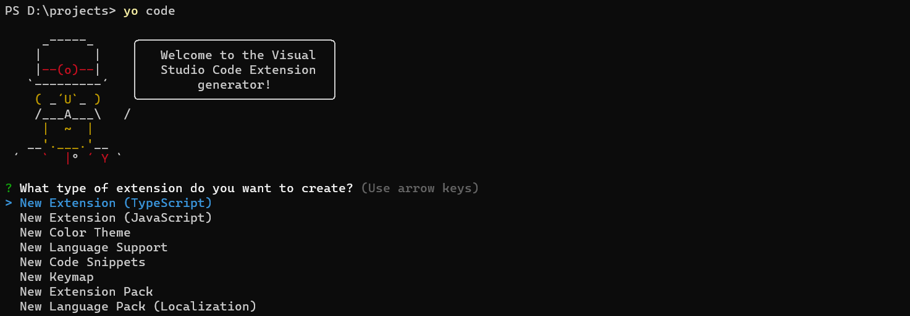
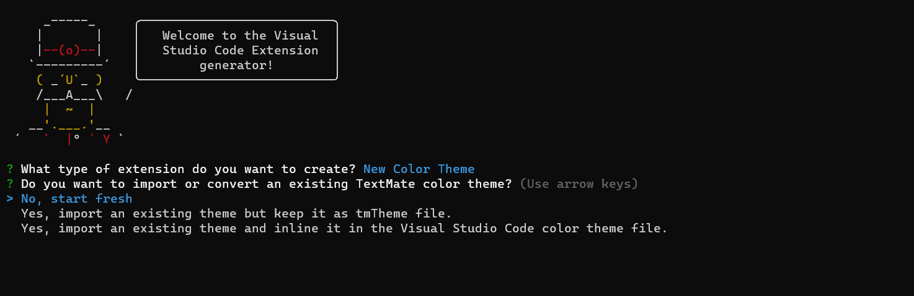
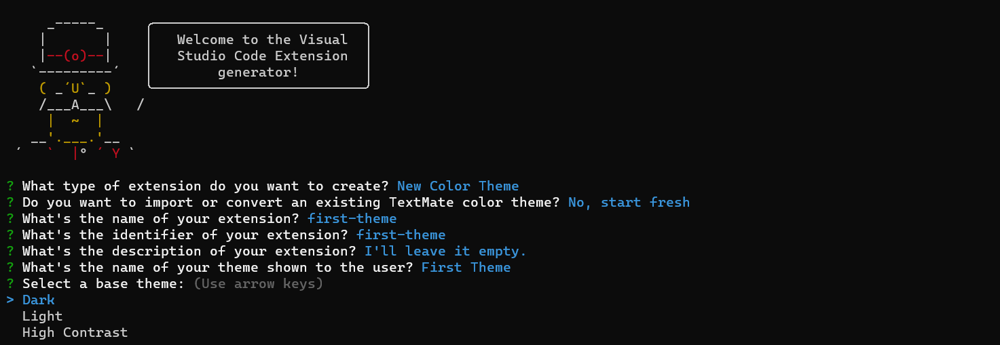
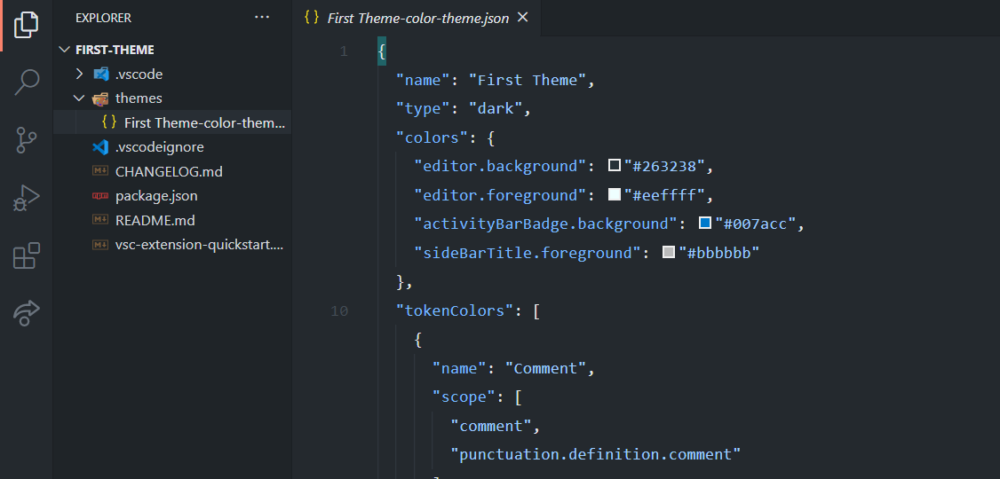
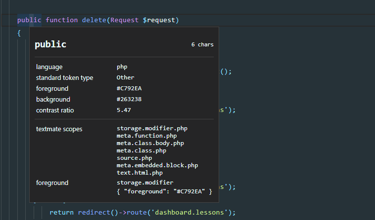
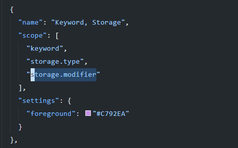
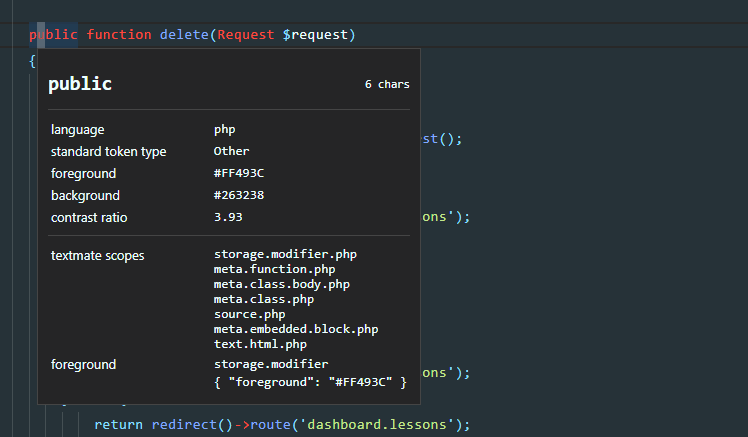

VS Code is popular code editor around developers. It has it’s own marketplace so, you can easly customize your editor.
Recently I developed my first VS Code theme and extension. I want to share with you how I did and how you can build your own.
What is theme?
Themes are simply customized color palettes for editors. They define colors in json file so, you can download and use it on your editor.
What is required to get started?
If you installed these programs, we can move to installing required packages.
We have to install some packages to start with theme boilerplate.
npm i -g yo generator-code
Now we have VS Code extension generator. To start developing, run:
yo code
After running it, you should see something like this:

Select New Color Theme and hit enter.
In this tutorial we build our theme from scratch so, pick No, start fresh

Answer the questions:

Now yeoman should create a new folder named as your theme name.
Open your theme folder with VS Code to get started.
You should see this:

Your will work with json file to edit theme.
In the colors you can edit background, foreground and active colors. Just type something you want and it’ll autofill for you.
Inside the tokenColors as you can guess we’ll work with syntax highlighting. You can edit colors for general or specific languages.
Please take a look at the default code to understand it better.
How to see the theme in real time?
In VS Code press f5 to run debug mode. You should see another VS Code with your theme.
When you make changes it’ll automaticly update itself.
How to find token names?
VS Code give us token viewer tool. To run it type Ctrl+Shift+P and search for Developer: Inspect Editor Tokens and Scopes.
After, just click the text you want to see. It’ll show you what tokens it have.

How to change colors?
With inspect editor find your token and search it inside theme json file. If you can’t find it no worries you can easly add your own token.
For this example I’ll go with the public syntax. To find it I’ll search for storage.modifier. You can also search it specific for php.

To change the color just edit foreground.

As you can see all storage.modifier tokens are changed.
Further more
VS Code shared articles on their website about publishing your own theme.
Visit VS Code’s website to read more.
Watch my video tutorial ☝